UNIT 23 · VOCABULARY
H 開頭（一）
H-I
43 個單字聽・唸・用
本單元單字一覽
WORD UP「H-I」的 43 個字（habit 到 hill）。紅色＝要複習，藍色標籤＝WORD UP 標熟記、還要在這裡考對。
habithairhaircuthalfhallHalloweenhamhamburgerhammerhandhandkerchiefhandlehandsomehanghangerhappenhappyhardhardlyhathatehaveheadheadachehealthhealthyhearheartheatheaterheavyheighthelicopterhelphelpfulhenhereherohidehighhighwayhikehill
每個字都有 🔊，先聽發音、跟著唸，再看例句。
單字 1–4
🔁
habit
習慣n.
Reading every day is a good habit.
每天閱讀是好習慣。
每天閱讀是好習慣。
hair
頭髮n.
She has long black hair.
她有一頭烏黑長髮。
她有一頭烏黑長髮。

haircut
理髮n.
I need a haircut.
我該剪頭髮了。
我該剪頭髮了。
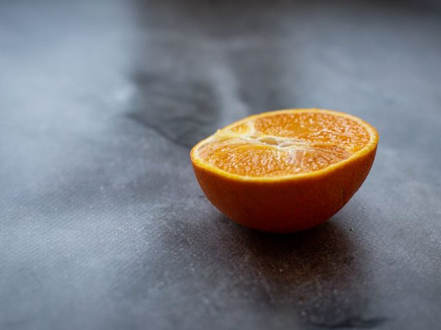
half
一半n./adj.
I waited for half an hour.
我等了半小時。
我等了半小時。
單字 5–8
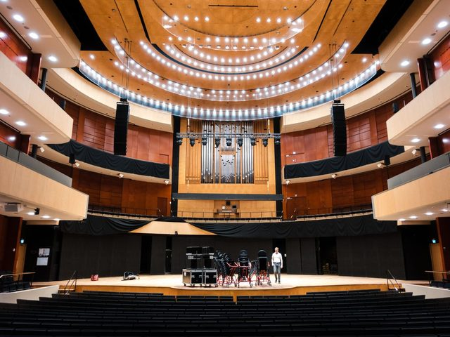
hall
大廳；走廊；禮堂n.
The meeting is in the school hall.
會議在學校禮堂舉行。
會議在學校禮堂舉行。
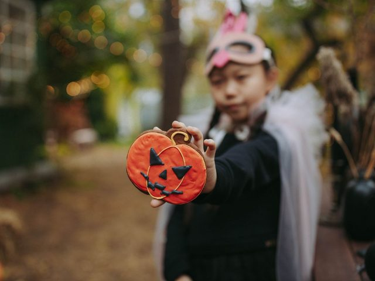
Halloween
萬聖節n.
Kids wear costumes on Halloween.
萬聖節小孩會穿變裝服。
萬聖節小孩會穿變裝服。
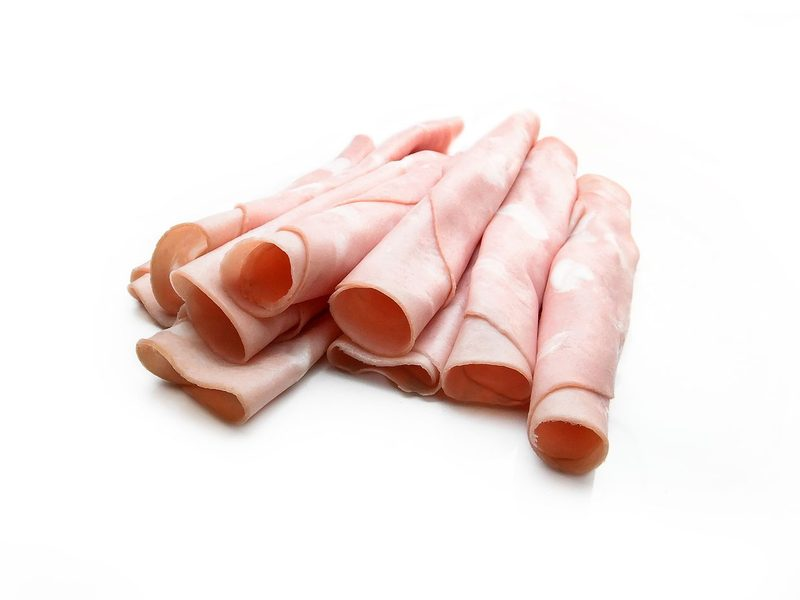
ham
火腿n.
I had a ham sandwich for lunch.
我午餐吃了火腿三明治。
我午餐吃了火腿三明治。
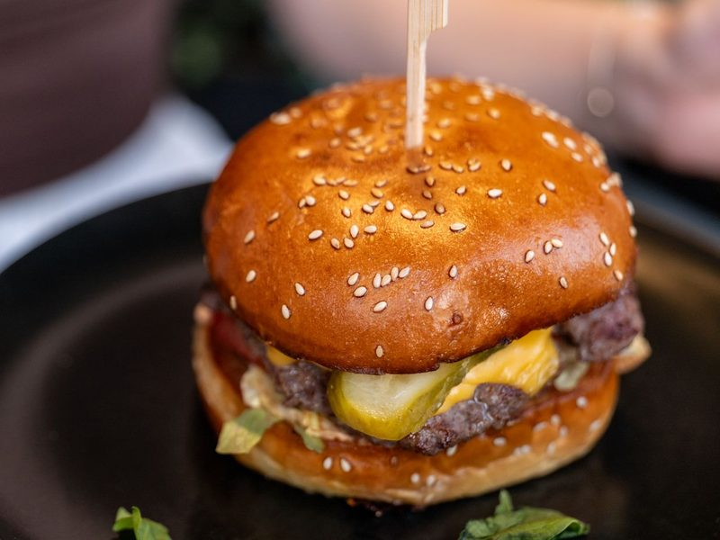
hamburger
漢堡n.
Can I have a hamburger and fries?
我可以要一個漢堡和薯條嗎？
我可以要一個漢堡和薯條嗎？
單字 9–12
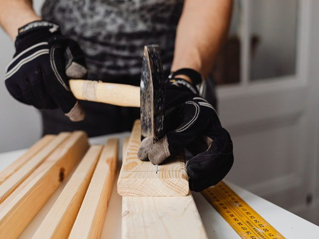
hammer
鐵鎚n.
Dad used a hammer to fix the chair.
爸爸用鐵鎚修椅子。
爸爸用鐵鎚修椅子。
hand
手；遞n./v.
Please hand in your homework.
請繳交作業。
請繳交作業。
handkerchief
手帕n.
He wiped his face with a handkerchief.
他用手帕擦臉。
他用手帕擦臉。
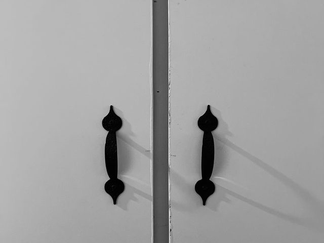
handle
把手；處理n./v.
I can handle it by myself.
我自己可以處理。
我自己可以處理。
單字 13–16

handsome
英俊的adj.
The actor is very handsome.
那位男演員很帥。
那位男演員很帥。

hang
懸掛v.
Hang your coat on the hook.
把外套掛在掛鉤上。
把外套掛在掛鉤上。

hanger
衣架n.
Put your shirt on a hanger.
把襯衫掛在衣架上。
把襯衫掛在衣架上。
❗
happen
發生v.
What happened to your leg?
你的腳怎麼了？
你的腳怎麼了？
單字 17–20

happy
快樂的adj.
Happy birthday!
生日快樂！
生日快樂！
hard
困難的；硬的；努力地adj./adv.
She studies very hard.
她非常用功。
她非常用功。
🔇
hardly
幾乎不adv.
I can hardly hear you.
我幾乎聽不到你說話。
我幾乎聽不到你說話。
hat
帽子（有帽緣）n.
Wear a hat in the sun.
在太陽下要戴帽子。
在太陽下要戴帽子。
單字 21–24
😤
hate
討厭v.
I hate waiting in line.
我討厭排隊。
我討厭排隊。
🍱
have
有；吃；喝v.
We have lunch at noon.
我們中午吃午餐。
我們中午吃午餐。
head
頭n.
He hit his head on the door.
他的頭撞到門。
他的頭撞到門。
headache
頭痛n.
I have a terrible headache.
我頭痛得厲害。
我頭痛得厲害。
單字 25–28
health
健康n.
Exercise is good for your health.
運動對健康好。
運動對健康好。
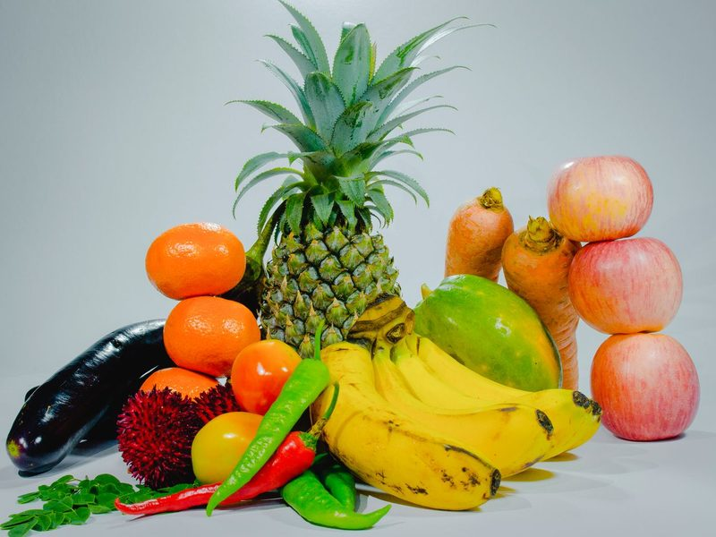
healthy
健康的adj.
Eat healthy food.
吃健康的食物。
吃健康的食物。
hear
聽到v.
Did you hear that noise?
你有聽到那個聲音嗎？
你有聽到那個聲音嗎？
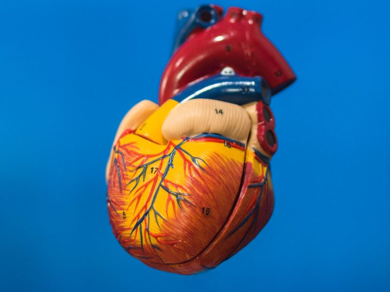
heart
心；心臟n.
Learn this poem by heart.
把這首詩背下來。
把這首詩背下來。
單字 29–32
heat
熱；加熱n./v.
Heat the milk before you drink it.
牛奶加熱再喝。
牛奶加熱再喝。
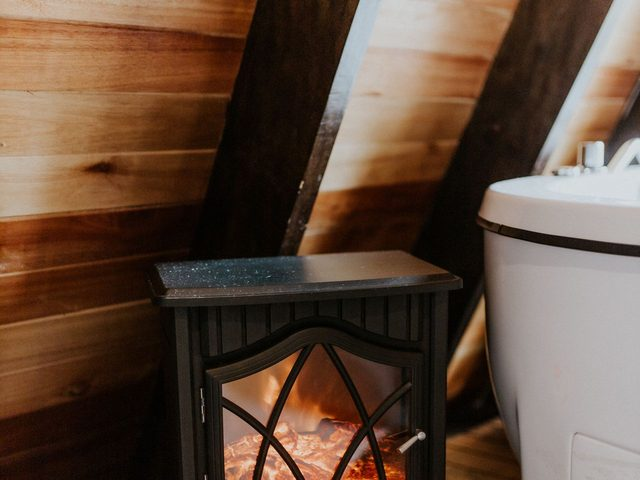
heater
暖氣機；加熱器n.
Turn on the heater. It's cold.
打開暖氣，好冷。
打開暖氣，好冷。
heavy
重的；大量的adj.
This box is too heavy for me.
這個箱子對我來說太重了。
這個箱子對我來說太重了。
📏
height
高度；身高n.
What is your height?
你身高多少？
你身高多少？
單字 33–36

helicopter
直升機n.
A helicopter is flying over the city.
一架直升機在城市上空飛。
一架直升機在城市上空飛。
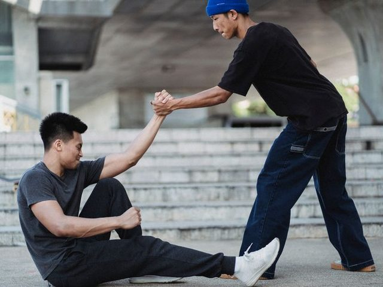
help
幫助v./n.
Can you help me carry this?
你可以幫我搬這個嗎？
你可以幫我搬這個嗎？
🤝
helpful
有幫助的adj.
Thanks. You've been very helpful.
謝謝，你幫了大忙。
謝謝，你幫了大忙。

hen
母雞n.
The hen laid an egg.
母雞下了一顆蛋。
母雞下了一顆蛋。
單字 37–40
📍
here
這裡adv.
Come here, please.
請過來這裡。
請過來這裡。

hero
英雄n.
My dad is my hero.
我爸爸是我的英雄。
我爸爸是我的英雄。

hide
躲藏；隱藏v.
The cat is hiding under the bed.
貓躲在床底下。
貓躲在床底下。
high
高的；高地adj./adv.
The mountain is very high.
這座山很高。
這座山很高。
單字 41–43

highway
公路；高速公路n.
We drove on the highway to Taichung.
我們走高速公路去台中。
我們走高速公路去台中。
hike
健行v./n.
We go hiking every Sunday.
我們每個星期天去健行。
我們每個星期天去健行。
hill
小山；山丘n.
There is a house on the hill.
山丘上有一棟房子。
山丘上有一棟房子。
重點整理
| 說法 | 中文 | 例子 |
|---|---|---|
| hard / hardly | 努力地 ／ 幾乎不 | work hard ／ I can hardly see. |
| health / healthy | 健康（名詞）／ 健康的（形容詞） | good for your health ／ healthy food |
| hat / cap | 有帽緣的帽子 ／ 棒球帽 | a sun hat ／ a baseball cap |
| hand in | 繳交 | hand in the report |
| learn…by heart | 背下來 | learn the words by heart |
| go hiking | 去健行 | go hiking in the mountains |
| half an hour | 半小時 | wait for half an hour |
high 的名詞是 height（gh 不發音）；hero 的複數是 heroes。
快問快答：中文 → 英文
1習慣habit
2理髮haircut
3大廳；走廊；禮堂hall
4火腿ham
5鐵鎚hammer
6手帕handkerchief
7英俊的handsome
8衣架hanger
快問快答：英文 → 中文
1happy快樂的
2hardly幾乎不
3hate討厭
4head頭
5health健康
6hear聽到
7heat熱；加熱
8heavy重的；大量的
學完了！接下來
複習方法
review
- 回到「📗 單字卡」，按「遮中文」自己考自己
- 再按「遮英文」，看中文說出英文
- 每個例句跟著 🔊 唸一次
準備好了
- 按右上角「📝 前往測驗」
- 測驗錯的題目要訂正到全對
- 訂正完成補送 1 點